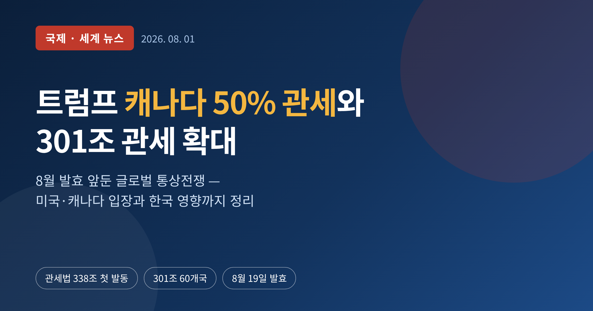
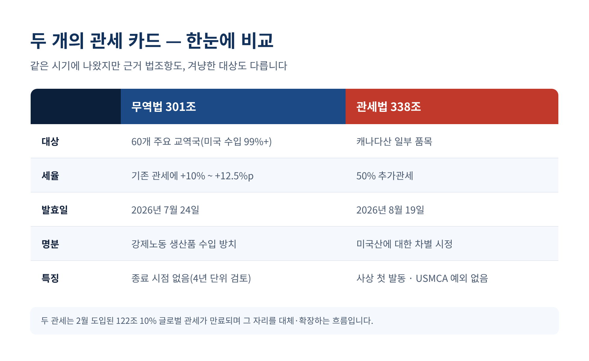
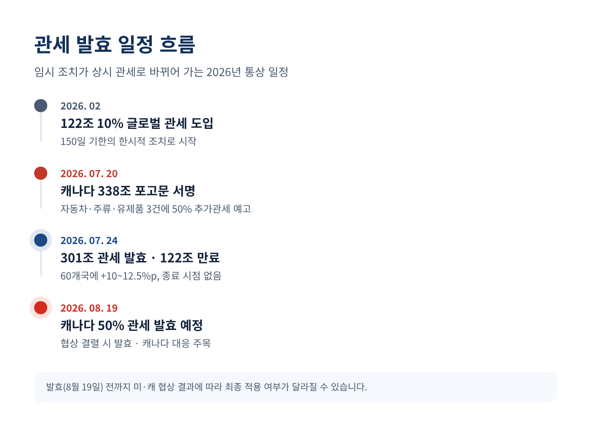
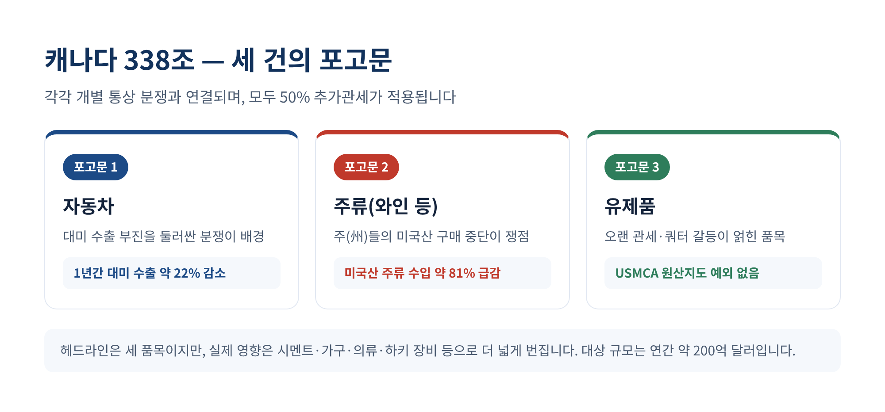
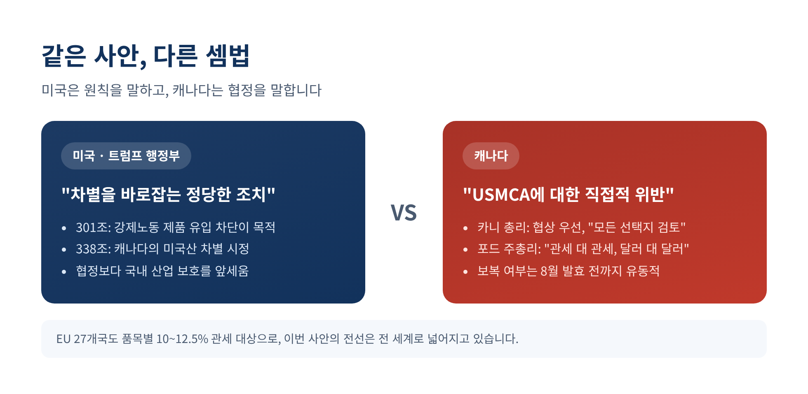
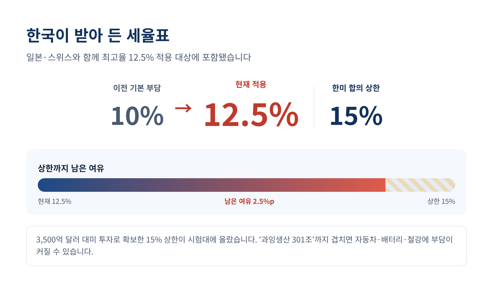

이번 글에서는 2026년 여름 미국이 꺼내 든 두 개의 관세 카드를 정리해 보겠습니다.
하나는 60여 개 교역국을 겨냥한 무역법 301조 관세이고, 다른 하나는 캐나다산 일부 품목에 붙는 50% 추가관세입니다.
무슨 일이 있었는지, 왜 한국에도 중요한지, 그리고 8월 이후 무엇을 지켜봐야 하는지를 차분히 짚겠습니다.
두 가지 조치가 거의 동시에 나왔습니다.
먼저 2026년 7월 23일, 미국무역대표부(USTR)가 무역법 301조를 근거로 60개 주요 교역국에 관세를 부과했습니다. 세율은 10%에서 12.5%. 발효는 7월 24일 0시 1분(동부시각)이었습니다. 이 60개 교역국은 미국 수입의 99% 이상을 차지합니다. 사실상 미국으로 들어오는 거의 모든 물건에 새 관세가 얹힌 셈입니다.
다른 하나는 캐나다를 향한 조치입니다. 7월 20일 백악관은 1930년 관세법 338조를 근거로 세 건의 포고문에 서명했습니다. 캐나다산 자동차, 주류, 유제품 등 일부 품목에 50% 추가관세를 매긴다는 내용입니다. 연간 약 200억 달러 규모의 수입이 대상이며, 발효일은 8월 19일입니다.

관세율 숫자만 보면 크지 않아 보일 수 있습니다. 하지만 이번 조치의 무게는 세율이 아니라 '방식'에 있습니다.
338조는 이번이 사실상 첫 실전 발동입니다. 이 조항은 미국 수입품을 다른 나라보다 차별하는 국가에 대통령이 관세를 물릴 수 있게 한 규정입니다. 1930년에 만들어졌지만 실제로 쓰인 적이 거의 없었고, 마지막 검토가 1949년이었습니다. 잠들어 있던 법을 80년 만에 깨운 것입니다.
더 눈에 띄는 대목은 따로 있습니다. 캐나다산이라도 USMCA, 즉 미국·멕시코·캐나다 협정의 원산지 기준을 충족하면 보통은 관세를 면제받습니다. 그런데 이번 세 건의 포고문에는 그 예외가 없습니다. 협정을 지킨 물건에도 50%가 그대로 붙습니다.

301조 관세의 명분은 '강제노동'입니다. USTR은 60개 경제권이 강제노동으로 만든 제품의 수입을 막는 제도를 제대로 갖추지 못했다고 판단했습니다. 그래서 이런 제도를 운영하거나 도입을 약속한 나라에는 10%포인트, 그렇지 않은 나라에는 12.5%포인트를 기존 관세에 더했습니다.
이 관세는 지난 2월 도입돼 7월 24일 만료된 무역법 122조상의 10% 글로벌 관세를 대신합니다. 차이가 하나 있습니다. 기존 관세에는 150일이라는 기한이 있었지만, 301조 관세에는 종료 시점이 없습니다. 통상 4년마다 연장 여부를 들여다볼 뿐입니다. 임시 조치가 상시 조치로 바뀐 셈입니다.
교역국을 나누는 기준도 생겼습니다. 제안 단계에서 EU를 포함한 15개 교역국은 대부분 품목에 10%가, 나머지 45개 교역국에는 12.5%가 매겨지는 구도였습니다. 같은 관세라도 나라마다 다른 세율표를 받아 든 셈입니다.
캐나다를 향한 338조는 결이 다릅니다. 백악관은 자동차, 주류, 유제품 세 분야를 각각 별도의 분쟁으로 보고 포고문을 나눠 서명했습니다. 배경에는 구체적 수치가 깔려 있습니다. 캐나다의 대미 자동차 수출은 2026년 3월까지 1년 사이 약 22% 줄었습니다. 대부분의 주가 미국산 주류 구매를 끊으면서, 캐나다의 미국산 주류 수입은 약 81% 급감했습니다. 미국은 이를 '차별'로 규정했고, 캐나다는 앞선 관세에 대한 정당한 대응이라고 봅니다.

같은 사안을 두고 두 나라의 셈법은 다릅니다.
미국은 이번 조치를 원칙의 문제로 봅니다. 301조는 강제노동 제품을 막기 위한 것이고, 338조는 캐나다의 미국산 차별을 바로잡기 위한 것이라는 논리입니다.
캐나다는 협정 위반이라고 반발합니다. 마크 카니 총리는 이번 조치를 USMCA에 대한 "직접적 위반"이라고 표현했습니다. 다만 문을 완전히 닫지는 않았습니다. 발효 전 합의 가능성을 열어두며 "모든 선택지가 테이블 위에 있다"고 말했습니다. 카니 총리와 트럼프 대통령은 협상을 강화하기로 뜻을 모으기도 했습니다.
캐나다 안에서도 온도차가 있습니다. 더그 포드 온타리오 주총리는 "관세가 강행되면 캐나다도 관세 대 관세, 달러 대 달러로 맞대응해야 한다"며 강경론을 폈습니다. 협상을 앞세우는 총리와 즉각 보복을 주장하는 주총리 사이에서, 캐나다의 최종 대응은 8월 19일까지 유동적입니다.
EU도 무관하지 않습니다. 27개 회원국은 품목별로 10~12.5% 관세 대상에 올랐고, 세율은 기존 최혜국 관세에 얹히는 방식으로 계산됩니다. EU 측은 미국의 논리에 조목조목 반박하며 대응 수위를 저울질하고 있습니다. 결국 이번 사안은 미국과 캐나다의 다툼에 머물지 않습니다. 99% 넘는 미국 수입을 건드린 301조와, 협정의 예외를 지운 338조가 맞물리며 전선이 전 세계로 넓어졌습니다.

한국도 이번 301조 관세의 사정권 안에 있습니다. 한국은 일본, 스위스와 함께 최고율인 12.5% 적용 대상에 포함됐습니다.
숫자로 보면 이렇습니다. 한국산 일반 제품의 기본 관세 부담이 직전보다 2.5%포인트 올랐습니다. 다만 지난해 한미 무역 합의로 정해진 15% 관세 상한과 비교하면 아직 2.5%포인트의 여유가 남아 있습니다.
문제는 이 여유가 얇다는 점입니다. 한국은 3,500억 달러 규모의 대미 투자를 약속하며 15% 상한을 확보했습니다. 그 상한이 지금 시험대에 올랐습니다. 인도처럼 10%만 적용받는 나라와 비교하면, 한국은 2.5%포인트 더 무거운 짐을 지고 출발하는 셈입니다. 같은 시장을 두고 경쟁하는 처지에서 이 격차는 결코 작지 않습니다. 만약 미국이 예고한 '과잉생산 301조'까지 현실화한다면, 자동차·배터리·철강 같은 주력 수출 산업이 함께 흔들릴 수 있습니다. 한국무역협회는 관세가 10%에서 12.5%로 오른 만큼 추가 관세에 대비해야 한다고 짚었습니다.

정리하면 이렇습니다.
이번 관세는 단순한 세율 인상이 아닙니다. 잠자던 법 조항을 깨우고, 자유무역협정의 예외마저 걷어낸 조치입니다. 미국은 원칙을 말하고, 캐나다는 협정을 말합니다. 두 목소리는 8월 19일을 향해 팽팽히 맞서 있습니다.
한국에는 아직 2.5%포인트의 방어선이 남아 있습니다. 그러나 통상 환경이 이렇게 빠르게 바뀌는 국면에서, 그 여유가 오래 지켜질지는 아무도 장담하기 어렵습니다.